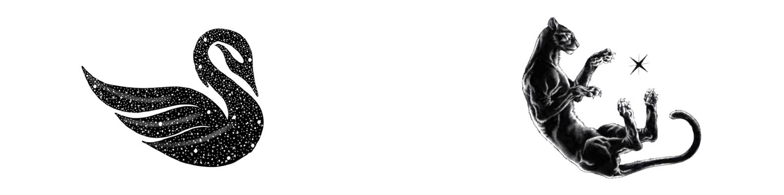

Umut Akarsu
About
- Started entrepreneurship at age 7.
- Mostly did social sciences until age 16.
- Conducted a DeepFake research study with 259 participants at 15.
- Got my first computer at 16 and co-founded a game studio.
- Built a 7-person game dev team at 16.
- Opened and managed an office for the team at 16.
- Found a loophole in the Turkish high school system, completed 5 years in 3.
- Worked as Founders Associate at an EF-backed startup (Lucent) at 17.
- Selected for Entrepreneurs First and Tech Europe at 17.
- Conducting independent research on neuroscience and brain-computer interfaces.
- I think I am at least an 8 on Ken Wilber.
- Exploring opportunities.
© 2026 Umut Akarsu